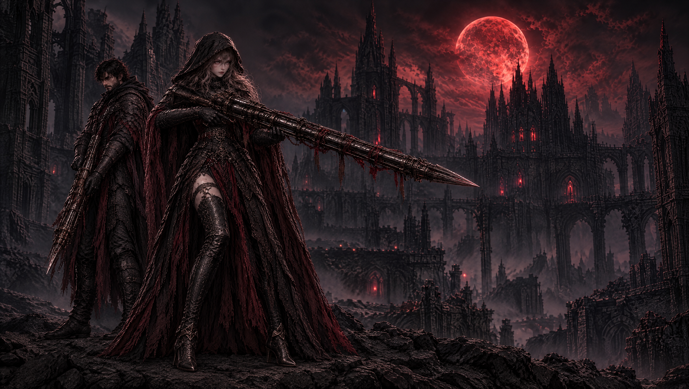
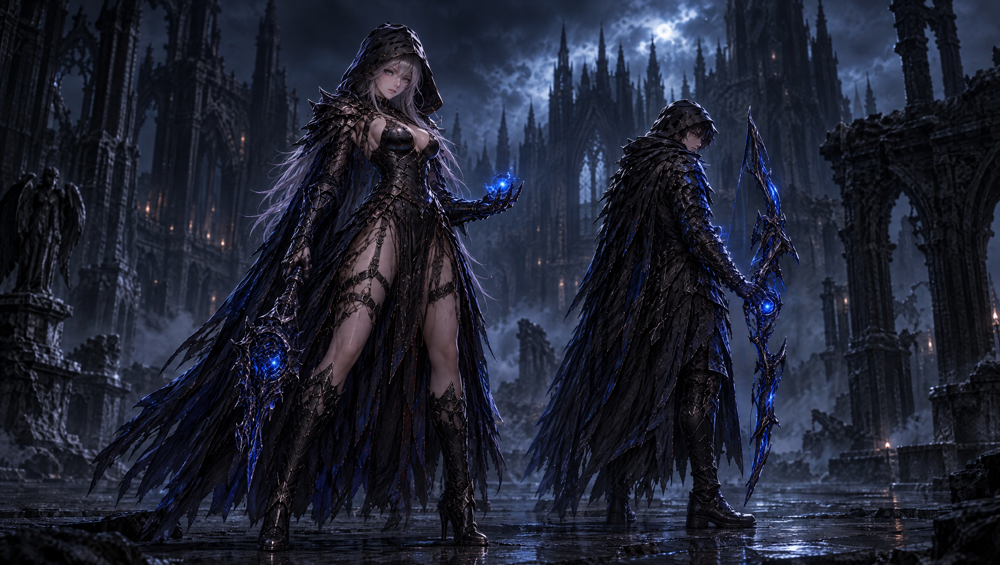
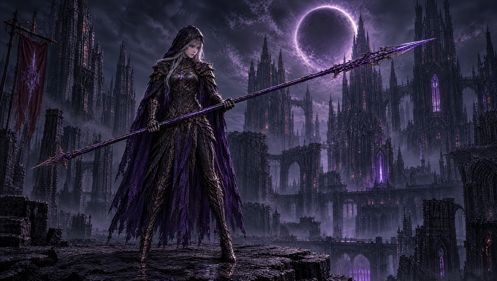
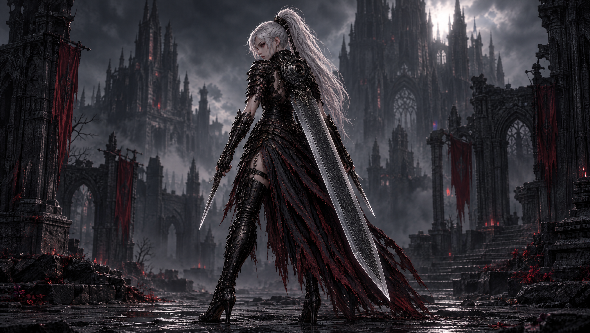
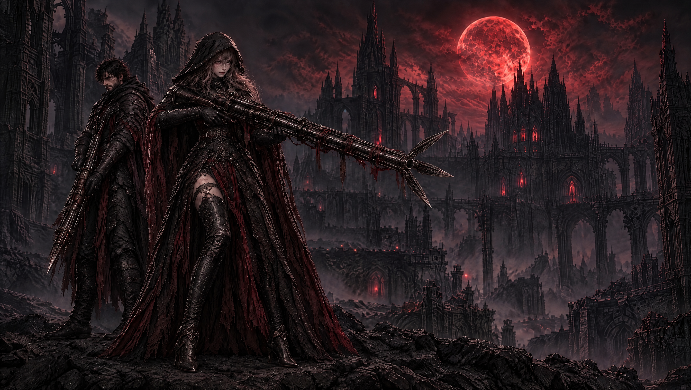

EXODUSER / MOTION SOURCE / 2026.09.28
움직이기 직전의 캐릭터들
글자 없이, 자세와 무기 상태가 드러나는 영상용 기준 이미지. 이미지를 누르면 원본을 볼 수 있습니다.

총사 — 닫힌 총구
발포 전 준비 자세. 총구의 날이 모인 닫힘 상태.

변성술사 — 낮은 에너지
작은 코어만 켜진 대기 상태. 두 인물과 무기의 실루엣을 분리했습니다.

아케인 랜서 — 시전 전
창끝과 발 주변에 여백을 두고 큰 마법진을 제거했습니다.

실버테일 — 등검 대기
흰 포니테일, 등 허브와 두꺼운 등검이 보이는 후면 사선 자세.
CRUCIFORM MAGNUM / STATE REFERENCE
닫힘 → 개방
평소에는 닫힘, 발포할 때 개방, 발포 후 다시 닫힘.



영상 생성 전의 이미지 검수본입니다. 실제 영상에서 총구 개폐와 인물·무기 형태가 유지되는지는 후속 검증이 필요합니다.